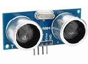

RFID-sensor© 2018, ProtoIt Platform: ARDUINO |  |
Beschrijving:
Een RFID-sensor werkt samen met ID-kaarten (ook wel tags genoemd).
De sensor leest de kaart en kan de ID weergeven.
Onderdelen:
RFID-sensor
Instellingen:
| Mosi-pin | De Arduino-pin waarop de MOSI-pin van de sensor is aangesloten. |
| Miso-pin | De Arduino-pin waarop de MOSI-pin van de sensor is aangesloten. |
| CS-pin | De Arduino-pin waarop de CS-pin van de sensor is aangesloten. |
| SCK-pin | De Arduino-pin waarop de SCK-pin van de sensor is aangesloten. |
| ID Gelezen | Het signaal ID Gelezen wordt uitgezonden nadat een ID-kaart wordt gepresenteerd. |
| Kaart-ID | Bevat de ID van de laatst gelezen ID-kaart. |